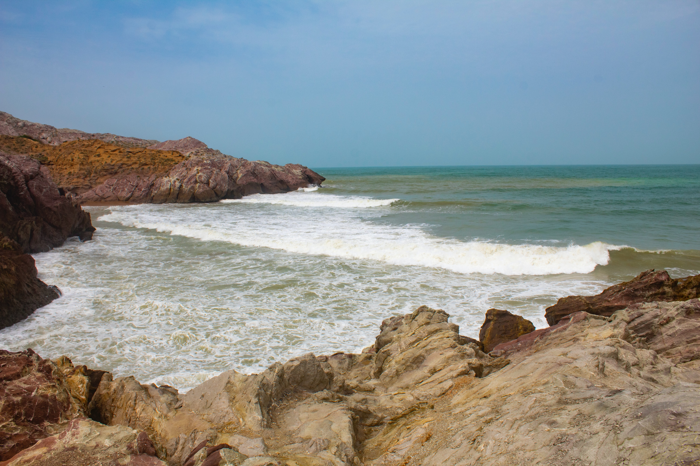

Gadani Beach

Gadani Beach is a beach on the Arabian Sea located near the Hub River and Cape Monze in Gadani, Hub
District, Balochistan, Pakistan. Gadani Beach is the location of Gadani ship-breaking yard, which is one of
the world's largest ship-breaking yards.
Hawksbay Beach
 Hawksbay Beach is a beach in Karachi, Sindh, Pakistan, located 20 km southwest of Karachi city. The beach is
named after Bladen Wilmer Hawke, who owned a house on the beach during the 1930s. The beach is very popular,
with hundreds of people visiting daily for swimming, camel and horse riding, and vacations.
Hawksbay Beach is a beach in Karachi, Sindh, Pakistan, located 20 km southwest of Karachi city. The beach is
named after Bladen Wilmer Hawke, who owned a house on the beach during the 1930s. The beach is very popular,
with hundreds of people visiting daily for swimming, camel and horse riding, and vacations.
Manoro Beach
 Manoro Beach is a small peninsula that forms a protective barrier between Karachi Harbour to the north and
the Arabian Sea to the south. Manora was formerly an island, but due to silting is now connected to the
mainland by a 12 kilometer long natural sandbridge known as Sandspit. The entrance to Karachi was once
guarded against pirate raids by the Manora Fort built in the 1790s, which was later upgraded by the British,
and then the Pakistan Navy.
Manoro Beach is a small peninsula that forms a protective barrier between Karachi Harbour to the north and
the Arabian Sea to the south. Manora was formerly an island, but due to silting is now connected to the
mainland by a 12 kilometer long natural sandbridge known as Sandspit. The entrance to Karachi was once
guarded against pirate raids by the Manora Fort built in the 1790s, which was later upgraded by the British,
and then the Pakistan Navy.
Sapat Beach
 . It is located about 220 km from Karachi at Lasbela district, Balochistan, Pakistan. The beach is home to a
curious rock formation called Bujih Koh — a steep cliff rising from the sand entirely on its own. It’s
separated from the cliff wall that stretches along the coast straddling the beach between its rocky embrace
and the sea. The entire beach is home to a healthy colony of crabs. Another interesting feature about this
beach is that there are some caves on the cliffs. The beach is an entirely different entity at night. On
full-moon nights, when the rays strike the surf of the incoming waves, they almost seem to glow. Luckily
Pakistan also has bioluminescence at Sapat beach in Balochistan, Pakistan.
. It is located about 220 km from Karachi at Lasbela district, Balochistan, Pakistan. The beach is home to a
curious rock formation called Bujih Koh — a steep cliff rising from the sand entirely on its own. It’s
separated from the cliff wall that stretches along the coast straddling the beach between its rocky embrace
and the sea. The entire beach is home to a healthy colony of crabs. Another interesting feature about this
beach is that there are some caves on the cliffs. The beach is an entirely different entity at night. On
full-moon nights, when the rays strike the surf of the incoming waves, they almost seem to glow. Luckily
Pakistan also has bioluminescence at Sapat beach in Balochistan, Pakistan.
Kund Malir Beach
Kund Malir beach is located on Makran Coastal highway at a distance of about 175 kilometers from Karachi. We
about 30 persons(families) visited on 30th November 2019 and stayed one night at Kund Malir Resort. Beach is
very beautiful, calm and clean. Resort is average but areas nearby are excellent specially Golden beach.
Other tourist attractions in the area are Princess of Hope (statue), Hangol national park and Hanglaj Mata
Temple. Road to Kund Malir beach is scenic and smooth. As we were traveling by rented coach, it took about 5
hours and 30 minutes to reach at beach.
Ormara Beach
Going towards Gwadar through the Makran Coastal Highway, Ormara comes in midway between Karachi and Gwadar.
Its historical routes are linked with Alexander the Great, who stayed there with his army for a few days on
his way back from the Indus region after conquering the lands of Sindh, Punjab and the Khyber Pakhtunkhwa
regions of modern-day Pakistan in 400 BC. One of his generals, Ormoz, died there, and the present-day city
was named after him.
For a few centuries, Ormara remained a battle field between the Baloch Sardar (local feudal) and foreign
aggressors. Before independence, it was part of the state of Las Bela and afterward it became part of the
Makran Division. Being an isolated town, it remained undeveloped; however, after construction of the Makran
Coastal Highway and Jinnah Naval Base, life has taken a positive change for the locals with many local
industries and the resultant increase in jobs available for the locals. It has a population of about forty
thousand people and still offers a traditional look at how the ancients lived. Most residents make their
livelihood from fishing; a few of them also work in Middle Eastern countries.